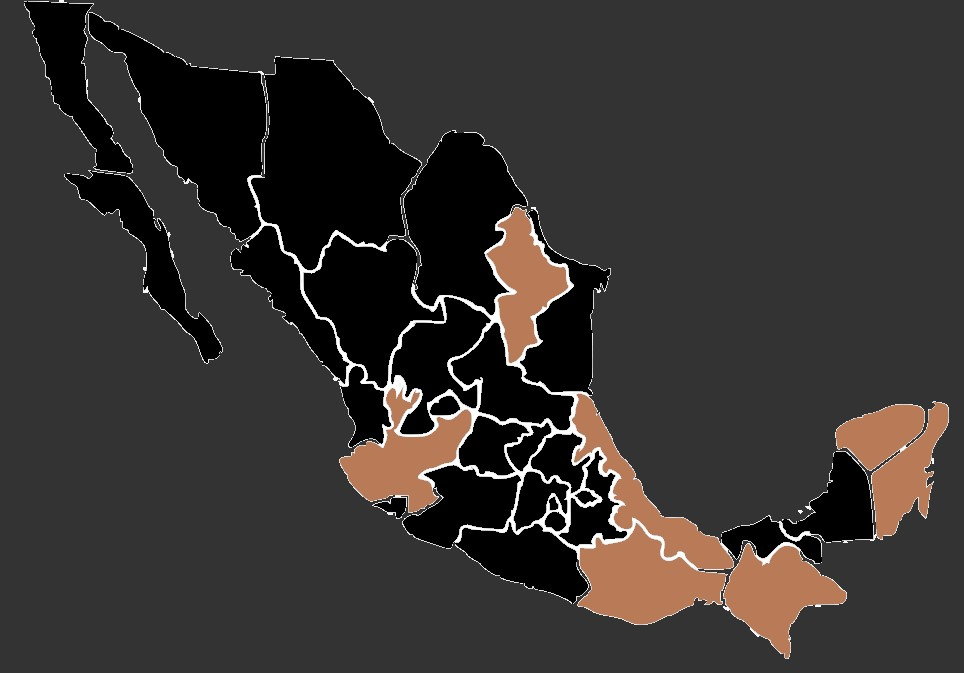

Las avispas de papel son avispas véspidas que recolectan fibras de madera muerta y tallos de plantas, que mezclan con saliva y usan para construir nidos hechos de material parecido al papel gris o marrón.
Tamaño: Las avispas de papel son insectos de tamaño mediano a grande dentro del mundo de las avispas. Varían en longitud desde alrededor de 2.5 a 5 centímetros. Tienen un cuerpo alargado y delgado con una cintura muy marcada entre el tórax y el abdomen.
Color: Generalmente presentan un patrón de colores amarillo y negro distintivo. El abdomen suele ser rayado en tonos alternantes de amarillo y negro, mientras que el tórax puede ser predominantemente negro con algunas marcas amarillas. La cabeza también muestra una combinación de estos colores.
Alas: Poseen dos pares de alas membranosas y transparentes que son más largas que su cuerpo. Estas alas están conectadas a través de una red de venas que les permite volar ágilmente.
Aguijón: En el extremo del abdomen, las avispas de papel tienen un aguijón afilado y venenoso que utilizan para defenderse cuando se sienten amenazadas. A diferencia de las abejas, estas avispas pueden picar repetidamente.
Tamaño: Las avispas de papel son insectos de tamaño mediano a grande dentro del mundo de las avispas. Varían en longitud desde alrededor de 2.5 a 5 centímetros. Tienen un cuerpo alargado y delgado con una cintura muy marcada entre el tórax y el abdomen.
Color: Generalmente presentan un patrón de colores amarillo y negro distintivo. El abdomen suele ser rayado en tonos alternantes de amarillo y negro, mientras que el tórax puede ser predominantemente negro con algunas marcas amarillas. La cabeza también muestra una combinación de estos colores.
Alas: Poseen dos pares de alas membranosas y transparentes que son más largas que su cuerpo. Estas alas están conectadas a través de una red de venas que les permite volar ágilmente.
Aguijón: En el extremo del abdomen, las avispas de papel tienen un aguijón afilado y venenoso que utilizan para defenderse cuando se sienten amenazadas. A diferencia de las abejas, estas avispas pueden picar repetidamente.
Las avispas de papel son conocidas por construir nidos de papel, de ahí su nombre común. Su hábitat y comportamiento están estrechamente relacionados con la construcción y protección de estos nidos, así como con su papel en el ecosistema.
Las avispas de papel se encuentran en una variedad de entornos, desde bosques hasta áreas urbanas. Prefieren áreas protegidas del viento y la lluvia directa para construir sus nidos. Construyen sus nidos en lugares protegidos, como árboles, arbustos, aleros de techos, alrededor de edificios o en espacios cerrados, como áticos o aleros. Estos nidos están hechos de fibras de madera masticadas y mezcladas con saliva, formando una estructura similar al papel.
Son insectos sociales que viven en colonias. Cada colonia está liderada por una reina, y el resto de las avispas, obreras y machos, trabajan juntas para mantener y proteger el nido. Algunos de los estados donde es común encontrar avispas de papel son Chiapas, Veracruz, Yucatan, Quintana Roo, Oaxaca, Jalisco y Nuevo Leon.
Las avispas de papel se encuentran en una variedad de entornos, desde bosques hasta áreas urbanas. Prefieren áreas protegidas del viento y la lluvia directa para construir sus nidos. Construyen sus nidos en lugares protegidos, como árboles, arbustos, aleros de techos, alrededor de edificios o en espacios cerrados, como áticos o aleros. Estos nidos están hechos de fibras de madera masticadas y mezcladas con saliva, formando una estructura similar al papel.
Son insectos sociales que viven en colonias. Cada colonia está liderada por una reina, y el resto de las avispas, obreras y machos, trabajan juntas para mantener y proteger el nido. Algunos de los estados donde es común encontrar avispas de papel son Chiapas, Veracruz, Yucatan, Quintana Roo, Oaxaca, Jalisco y Nuevo Leon.
 Para alimentar a las larvas dentro del nido, las avispas de papel cazan otros insectos. Las avispas adultas capturan insectos como orugas, moscas, arañas u otros invertebrados y los llevan al nido donde las larvas se alimentan de ellos. Las avispas adultas mastican los alimentos sólidos y los mezclan con saliva para alimentar a las larvas en el interior del nido.
Los adultos obtienen nutrientes principalmente del néctar de flores. Visitan una variedad de flores para alimentarse de su néctar, contribuyendo así a la polinización de muchas plantas. A veces, también se alimentan de frutas maduras, aprovechando su contenido de azúcares y nutrientes.
Los adultos obtienen nutrientes principalmente del néctar de flores. Visitan una variedad de flores para alimentarse de su néctar, contribuyendo así a la polinización de muchas plantas. A veces, también se alimentan de frutas maduras, aprovechando su contenido de azúcares y nutrientes.
• Las colonias de avispas de papel pueden contener una gran cantidad de individuos durante el verano, pero en invierno, la mayoría de las avispas mueren, dejando a las reinas fecundadas que buscarán refugio para pasar el invierno y reiniciar la colonia en la siguiente temporada.
•Las avispas de papel son expertas constructoras de nidos hechos de fibras de madera masticada y mezclada con saliva. Estos nidos pueden tener capas de celdas hexagonales donde crían a sus larvas y pueden llegar a ser bastante grandes, albergando a cientos de avispas.
•Aunque suelen ser territoriales y defensivas cuando se sienten amenazadas, las avispas de papel son menos agresivas en comparación con las abejas. Sin embargo, su aguijón es afilado y pueden picar repetidamente si se sienten provocadas.
• Viven en colonias sociales con una estructura jerárquica. Cada colonia está encabezada por una reina, y las avispas obreras trabajan en equipo para mantener el nido y cuidar de las larvas.
•Las avispas de papel son expertas constructoras de nidos hechos de fibras de madera masticada y mezclada con saliva. Estos nidos pueden tener capas de celdas hexagonales donde crían a sus larvas y pueden llegar a ser bastante grandes, albergando a cientos de avispas.
•Aunque suelen ser territoriales y defensivas cuando se sienten amenazadas, las avispas de papel son menos agresivas en comparación con las abejas. Sin embargo, su aguijón es afilado y pueden picar repetidamente si se sienten provocadas.
• Viven en colonias sociales con una estructura jerárquica. Cada colonia está encabezada por una reina, y las avispas obreras trabajan en equipo para mantener el nido y cuidar de las larvas.